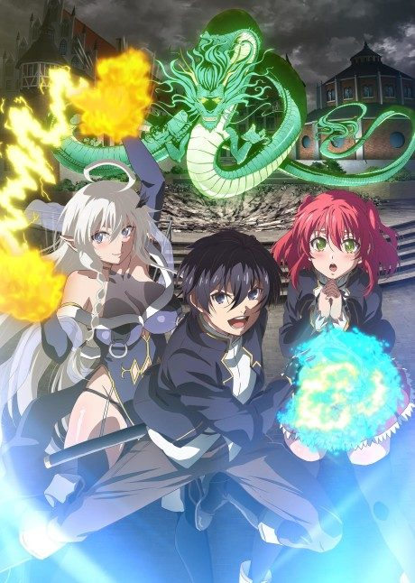

Welcome to Demon School! Iruma-kun
魔入りました！入間くん
Iruma is sold to a demon by his parents, who adopts him and sends him to a demon school.
After the anime, read the manga from Chapter 215.
7.7AniList score
—Animeter, no votes yet
89episodes, 4 seasons
Rate it or report where you stopped
4 seasons, 89 episodes
In airing order. Episode numbers on this site count straight through every season, so season 2 starts at episode 24.
1
2019 · TV
Welcome to Demon School! Iruma-kun
Episodes1–2323 ep
2
2021 · TV
Welcome to Demon School! Iruma-kun Season 2
Episodes24–4421 ep
3
2022 · TV
Welcome to Demon School! Iruma-kun Season 3
Episodes45–6521 ep
4
2026 · TV
Welcome to Demon School! Iruma-kun Season 4
Episodes66–8924 ep
Sources: AniList
More like Welcome to Demon School! Iruma-kun
 Unclear6.4
Unclear6.4
 Manga Ch. 757.6
Manga Ch. 757.6
 Manga Vol. 77.0
Manga Vol. 77.0
 Manga Vol. 77.2
Manga Vol. 77.2
 Manga Ch. 186.7
Manga Ch. 186.7
 Unclear7.9
Unclear7.9
 Unclear7.0
Unclear7.0

Unclear6.2 Manga Vol. 117.7
Manga Vol. 117.7
 Manga Vol. 58.1
Manga Vol. 58.1
 Done7.3
Done7.3
 Manga Vol. 37.5
Manga Vol. 37.5